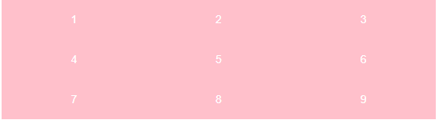
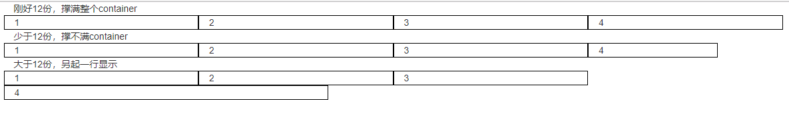
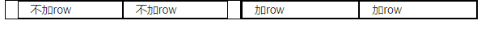
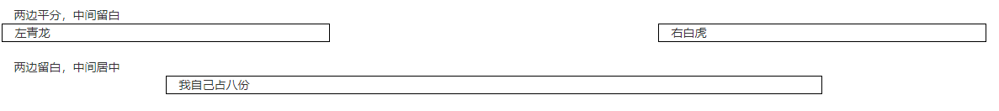
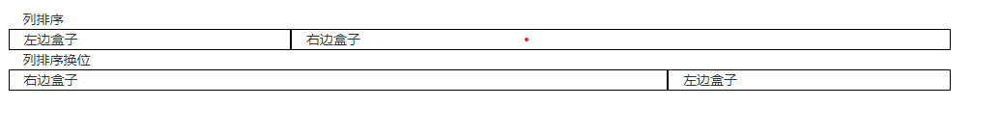
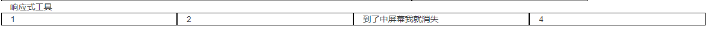
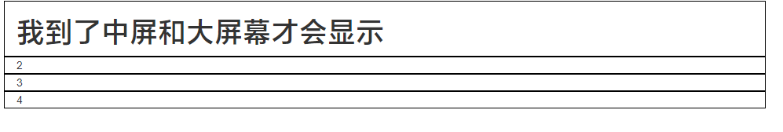

响应式需要一个父级作为布局容器，来配合子元素实现变化效果
原理是在不同屏幕下，通过媒体查询来改变这个布局容器的大小，再改变里面子元素的排列方式和大小，从而实现不同屏幕下，看到不同的页面布局和样式的变化
一般把屏幕分为四类
| 设备划分 | 尺寸区间 |
|---|---|
| 超小屏幕（手机） | < 768px |
| 小屏设备（平板） | >= 768px ~ < 992px |
| 中等屏幕（桌面显示器） | >= 992px ~ <1200px |
| 宽屏设备（大屏幕显示器） | >= 1200px |
xxxxxxxxxx341 .container {2 height: 150px;3 background-color: pink;4 margin: 0 auto;5 }67 /* 根据不通屏幕下显示不同的宽度 */8 /* 小于768（手机） */9 @media screen and (max-width:768px) {10 .container {11 width: 100%；12 }13 }1415 /* 大于768（平板） */16 @media screen and (min-width:768px) {17 .container {18 width: 750px;19 }20 }2122 /* 大于992（桌面显示器） */23 @media screen and (min-width:992px) {24 .container {25 width: 1200px;26 }27 }2829 /* 大于1200（大屏幕显示器） */30 @media screen and (min-width:1200px) {31 .container {32 width: 1500px;33 }34 }
xxxxxxxxxx441 <style>2 .container ul li {3 height: 50px;4 background-color: pink;5 list-style: none;6 line-height: 50px;7 color: white;8 text-align: center;9 float: left;10 }1112 .container ul {13 width: 100%;14 }1516 @media screen and (max-width:648px) {17 .container ul li {18 width: 33.33%;1920 }21 }2223 @media screen and (min-width:648px) {24 .container ul li {25 width: 64.8px;26 }27 }28 </style>2930<body>31 <div class="container">32 <ul>33 <li>1</li>34 <li>2</li>35 <li>3</li>36 <li>4</li>37 <li>5</li>38 <li>6</li>39 <li>7</li>40 <li>8</li>41 <li>9</li>42 </ul>43 </div>44</body>xxxxxxxxxx41 <div class="container">2 <button type="button" class="btn btn-success">（成功）Success</button>3 <button type="button" class="btn btn-danger">（危险）Danger</button>4 </div>栅格系统通过用一系列的行（row）和列（Colum）来组合创建的布局
| 超小屏幕（手机）<768px | 小屏设备（平板）>=768px | 中等屏幕（桌面显示器）>=992px | 宽屏设备（大屏幕显示器）>=1200px | |
|---|---|---|---|---|
| .conrainer最大宽度 | 自动（100%） | 750px | 970px | 1170px |
| 类前缀 | .col-xs- | .col-sm- | .col-md- | .col-lg- |
| 列（column）数 | 12 | 12 | 12 | 12 |
xxxxxxxxxx61 <div class="row">2 <span class="col-xs-3 col-lg-5">1</span>3 <span class="col-xs-3 col-lg-2">2</span>4 <span class="col-xs-3 col-lg-2">3</span>5 <span class="col-xs-3 col-lg-3">4</span>6 </div>
xxxxxxxxxx231 <div class="container">2 <!-- 刚好12份，撑满整个container -->3 <div class="row">4 <span class="col-xs-3">1</span>5 <span class="col-xs-3">2</span>6 <span class="col-xs-3">3</span>7 <span class="col-xs-3">4</span>8 </div>9 <!-- 少于12份，撑不满container -->10 <div class="row">11 <span class="col-xs-3">1</span>12 <span class="col-xs-3">2</span>13 <span class="col-xs-3">3</span>14 <span class="col-xs-2">4</span>15 </div>16 <!-- 大于12份，另起一行显示 -->17 <div class="row">18 <span class="col-xs-3">1</span>19 <span class="col-xs-3">2</span>20 <span class="col-xs-3">3</span>21 <span class="col-xs-5">4</span>22 </div>23 </div>分析bootstrap官网的盒子排列
xxxxxxxxxx61 <div class="row">2 <span class="col-xs-12 col-sm-6 col-md-4 col-lg-3">1</span>3 <span class="col-xs-12 col-sm-6 col-md-4 col-lg-3">2</span>4 <span class="col-xs-12 col-sm-6 col-md-4 col-lg-3">3</span>5 <span class="col-xs-12 col-sm-6 col-md-4 col-lg-3">4</span>6 </div>
xxxxxxxxxx151<div class="row">2 <!-- 每一列中的盒子默认也有12份 -->3 <span class="col-xs-12 col-sm-6 col-md-4 col-lg-3">4 <span class="col-lg-6">不加row</span>5 <span class="col-lg-6">不加row</span>6 </span>7 <span class="col-xs-12 col-sm-6 col-md-4 col-lg-3">8 <!-- 上面那个盒子默认会有15px的左右padding -->9 <!-- 所以建议列嵌套的时候 再加个row盒子，这样可以抵消padding还能自动和父元素一样高 -->10 <div class="row">11 <span class="col-lg-6">加row</span>12 <span class="col-lg-6">加row</span>13 </div>14 </span>15 </div>
xxxxxxxxxx91 两边平分，中间留白2 <div class="row">3 <div class="col-md-4">左青龙</div>4 <div class="col-md-4 col-md-offset-4">右白虎</div>5 </div>6 两边留白，中间居中7 <div class="row">8 <div class="col-md-8 col-md-offset-2">我自己占八份</div>9 </div>
xxxxxxxxxx101 列排序2 <div class="row">3 <div class="col-md-3">左边盒子</div>4 <div class="col-md-7">右边盒子</div>5 </div>6 列排序换位7 <div class="row">8 <div class="col-md-3 col-md-push-7">左边盒子</div>9 <div class="col-md-7 col-md-pull-3">右边盒子</div>10 </div>| 类名 | 超小屏 | 小屏 | 中屏 | 大屏 |
|---|---|---|---|---|
| .hidden-xs | 隐藏 | 显示 | 显示 | 显示 |
| .hidden-sm | 显示 | 隐藏 | 显示 | 隐藏 |
| .hidden-md | 显示 | 显示 | 隐藏 | 显示 |
| .hidden-lg | 显示 | 显示 | 显示 | 隐藏 |

xxxxxxxxxx61 <div class="row">2 <div class="col-lg-3 col-md-4">1</div>3 <div class="col-lg-3 col-md-4">2</div>4 <div class="col-lg-3 hidden-md hidden-sm hidden-xs">到了中屏幕我就消失</div>5 <div class="col-lg-3 col-md-4 ">4</div>6 </div>与之对应的是显示
| 类名 | 超小屏 | 小屏 | 中屏 | 大屏 |
|---|---|---|---|---|
| .visible-xs | 显示 | 隐藏 | 隐藏 | 隐藏 |
| .visible-sm | 隐藏 | 显示 | 隐藏 | 隐藏 |
| .visible-md | 隐藏 | 隐藏 | 显示 | 隐藏 |
| .visible-lg | 隐藏 | 隐藏 | 隐藏 | 显示 |

xxxxxxxxxx81 <div class="row">2 <div class="col-lg-3 ">3 <h1 class="visible-md visible-lg">我到了中屏和大屏幕才会显示</h1>4 </div>5 <div class="col-lg-3">2</div>6 <div class="col-lg-3">3</div>7 <div class="col-lg-3">4</div>8 </div>参考地址：http://zmlong.usa3v.net/html/project/alibaixiu/index.html